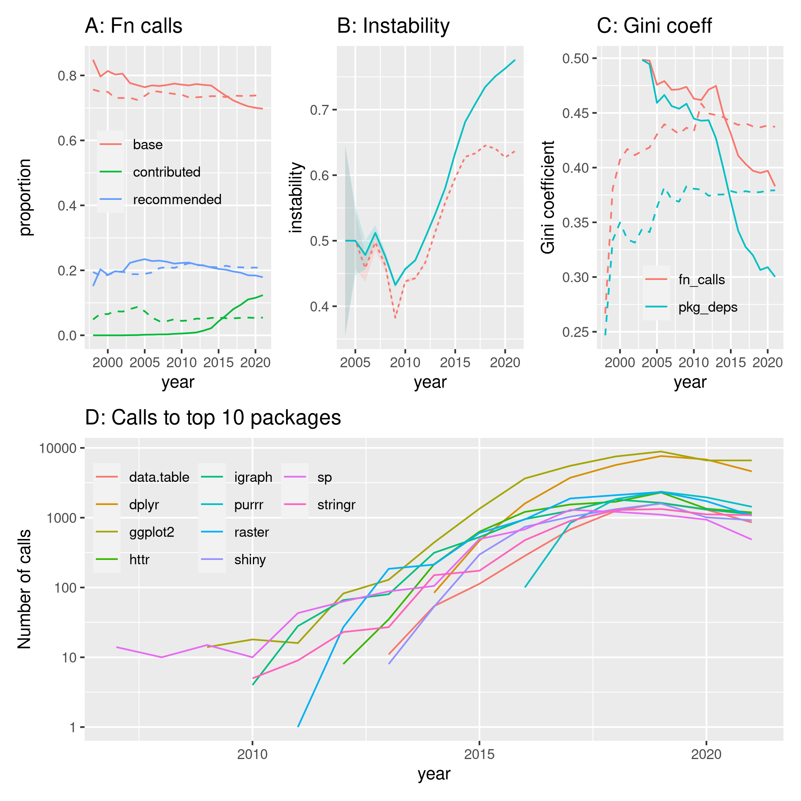

library ("pkgstatsAnalyses")
here <- here::here ()
v_data_dir <- file.path (here, "vignettes", "data")
datafile <- file.path (here, "data-raw", "pkgstats-results.Rds")
fig06_png <- file.path (here, "vignettes", "figures", "fig06.png")
f_fig6_exdat <- file.path (v_data_dir, "fig06-ext-calls.Rds")
calc_ext_calls_dat <- !file.exists (f_fig6_exdat) & !file.exists (fig06_png)
cp_dat_file <- file.path (v_data_dir, "fig06-coupling-data.Rds")
cp_dat_exists <- file.exists (cp_dat_file)
f_fig6_deps <- file.path (v_data_dir, "fig06-deps.Rds")
f_fig6_gini <- file.path (v_data_dir, "fig06-gini.Rds")
# gini coeffs are then actually Fig. 7
calc_fig6_deps <- !file.exists(f_fig6_deps) & !file.exists (fig06_png)
f_top10 <- file.path (v_data_dir, "fig06-top10-pkgs.Rds")
calc_top10 <- !file.exists (f_top10) & !file.exists (fig06_png)
recommended <- recommended_pkgs ()
# select latest packages only
x <- load_pkgstats_data (datafile, raw = TRUE, latest = FALSE) |>
group_by (package) |>
slice_max (date)
x <- x [which (!(is.na (x$external_calls) | x$external_calls == "")), ]
saveRDS (x, f_fig6_exdat)
x <- load_pkgstats_data (datafile, raw = TRUE, latest = FALSE)
deps1 <- dependencies (x, cran_by_year = TRUE)
deps1$deps$what <- deps1$gini$what <- "cran_by_year"
deps2 <- dependencies (x, cran_by_year = FALSE)
deps2$deps$what <- deps2$gini$what <- "annual"
gini <- rbind (deps1$gini, deps2$gini)
deps <- rbind (deps1$deps, deps2$deps)
saveRDS (deps, f_fig6_deps)
saveRDS (gini, f_fig6_gini)
cp_dat1 <- load_pkgstats_data (datafile, raw = TRUE, latest = FALSE) |>
summarise_coupling_data (cran_by_year = TRUE)
cp_dat2 <- load_pkgstats_data (datafile, raw = TRUE, latest = FALSE) |>
summarise_coupling_data (cran_by_year = FALSE)
cp_dat1$what <- "cran_by_year"
cp_dat2$what <- "annual"
cp_dat <- rbind (cp_dat1, cp_dat2)
saveRDS (cp_dat, cp_dat_file)
deps <- readRDS (f_fig6_deps)
deps <- deps [deps$category == "unique", ]
deps_cran <- deps [deps$what == "cran_by_year", ]
deps <- deps [deps$what == "annual", ]
p1 <- ggplot (deps, aes (x = year, y = proportion, colour = type)) +
geom_line () +
geom_line (data = deps_cran, show.legend = FALSE, lty = 2) +
ggtitle ("A: Fn calls") +
theme (legend.title = element_blank (),
legend.position = c (0.4, 0.6),
legend.background = element_rect(fill='transparent', colour='transparent'))
x <- load_pkgstats_data (datafile, raw = TRUE, latest = FALSE) |>
filter (!is.na (external_calls)) |>
filter (external_calls != "")
deps <- lapply (seq (nrow (x)), function (i) {
# a few have rogue colons at start:
ex <- gsub ("^\\:", "", x$external_calls [i])
out <- strsplit (strsplit (ex, ",") [[1]], "\\:")
lens <- vapply (out, length, integer (1))
out <- do.call (rbind, out [which (lens == 3)])
this_pkg <- x$package [i]
out <- out [which (out [, 1] != this_pkg), , drop = FALSE]
out <- cbind (out, rep (x$month [i], nrow (out)))
return (out)
})
deps <- do.call (rbind, deps)
# manual cleaning until https://github.com/ropensci-review-tools/pkgstats/issues/33
# '\' is punct, but 'n' is not, so first get rid of '\n':
deps [, 1] <- gsub ("^\\\\\\\\n", "", deps [, 1])
deps [, 1] <- gsub ("^[[:punct:]]*", "", deps [, 1])
deps <- deps [which (deps [, 1] != ""), ]
deps <- data.frame (package = deps [, 1],
date = lubridate::as_date (as.integer (deps [, 4])),
n_total = as.integer (deps [, 2]),
n_unique = as.integer (deps [, 3]))
deps <- deps |>
mutate (year = lubridate::year (date)) |>
group_by (year, package) |>
summarise (n = sum (n_unique), .groups = "keep")
saveRDS (deps, f_top10)
# Values for total and unique are almost identical, so only show unique
cp_dat <- readRDS (cp_dat_file) |>
select (-c (total_median, unique_median)) |>
rename (total = total_mean,
unique = unique_mean) |>
mutate (lo = total - total_se,
hi = total + total_se) |>
#pivot_longer (cols = c (total, unique)) |>
#rename (instability = value, type = name)
rename (instability = total)
cp_dat$lty <- cp_dat$what == "annual"
cp_dat$year <- as.integer (cp_dat$year)
p2 <- ggplot (cp_dat, aes (x = year, y = instability, colour = what, lty = lty)) +
geom_ribbon (aes (ymin = lo, ymax = hi, fill = what, colour = NULL),
alpha = 0.15, show.legend = FALSE) +
geom_line () +
theme (legend.position = "none") +
ggtitle ("B: Instability")
gini <- readRDS (f_fig6_gini) |>
filter (scale == "lin" & category != "unique")
gini$category [gini$category == "tot"] <- "fn_calls"
gini$category [gini$category == "deps"] <- "pkg_deps"
gini_cran <- gini |>
filter (what == "cran_by_year")
gini <- gini |>
filter (what == "annual")
gini <- ggplot (gini, aes (x = year, y = gini, colour = category)) +
geom_line () +
geom_line (data = gini_cran, show.legend = FALSE, lty = 2) +
ggtitle ("C: Gini coeff") +
ylab ("Gini coefficient") +
theme (legend.title = element_blank (),
legend.position = c (0.5, 0.2),
legend.background = element_rect(fill='transparent', colour='transparent'))
deps <- readRDS (f_top10)
top <- deps |>
group_by (package) |>
summarise (n = sum (n)) |>
arrange (desc (n)) |>
filter (!package %in% c ("base", recommended))
top10 <- top [1:10, ]
prop_top2 <- sum (top$n [1:2]) / sum (top$n)
prop_top2 <- round (100 * prop_top2, digits = 1)
deps10 <- deps [deps$package %in% top10$package [1:10], ]
deps10 |>
ggplot (aes (x = year, y = n, colour = package)) +
geom_line () +
ggtitle ("D: Calls to top 10 packages") +
ylab ("Number of calls") +
scale_y_log10 () +
theme (legend.title = element_blank(),
legend.position = c (0.20, 0.75),
legend.background = element_rect(fill='transparent', colour='transparent')) +
guides (color = guide_legend (ncol = 3)) -> p3
prop_top2 <- 16.6
knitr::include_graphics (fig06_png)

Fig. 6 Dependency networks between packages over time. (A) Proportions of function calls to the three categories of packages. (B) Coupling instability from package funciton calls. (C) Gini coefficients from both package dependency networks, and numbers of funciton calls. (D) Aggregate numbers of calls makde to the top ten imported packages.